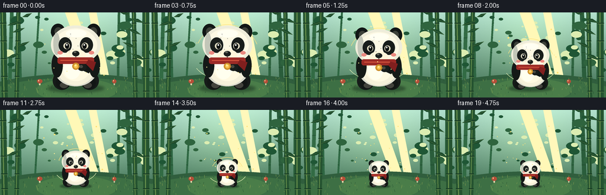
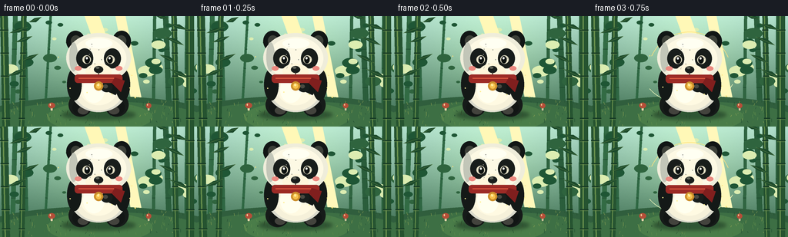

CODING AGENTS AS PIXEL WORLD MODELS
traex/GPT-5.6-Sol · instance_preservation_0046
点击播放 · 原生 RGB 像素
逐轮保存的候选
回放视频、检查图与代码变化。
每份候选均可单独播放。实际图片检查记录在下方工具轨迹中。
候选 01播放与检查图
点击播放 · 原生 RGB 像素


展开代码变化
--- 上一保存版本
+++ 本次保存版本
@@ -0,0 +1,262 @@
+from pathlib import Path
+import math
+import numpy as np
+from PIL import Image, ImageDraw, ImageFilter
+import artifact_io
+
+# Procedural 2-D animation: a single, consistently marked panda smoothly shrinks
+# in a fixed bamboo clearing. Rendering at 4x gives clean antialiased edges.
+W, H, N, FPS = 256, 144, 20, 4.0
+SS = 4
+RW, RH = W * SS, H * SS
+RNG = np.random.default_rng(4601)
+
+
+def q(v):
+ return int(round(v * SS))
+
+
+def box4(b):
+ return tuple(q(v) for v in b)
+
+
+def poly4(points):
+ return [(q(x), q(y)) for x, y in points]
+
+
+def smoothstep(x):
+ x = max(0.0, min(1.0, x))
+ return x * x * (3 - 2 * x)
+
+
+def make_background():
+ # Soft jade daylight gradient with a warm clearing in the middle.
+ yy, xx = np.mgrid[0:RH, 0:RW]
+ yn = yy / (RH - 1)
+ xn = xx / (RW - 1)
+ top = np.array([176, 222, 204.0])
+ bottom = np.array([56, 104, 75.0])
+ mix = yn[..., None]
+ arr = top * (1 - mix) + bottom * mix
+ glow = np.exp(-(((xn - .51) / .31) ** 2 + ((yn - .31) / .48) ** 2))
+ arr += glow[..., None] * np.array([24, 26, 12.0])
+ # Fine fixed texture: organic but temporally stable.
+ noise = RNG.normal(0, 1.4, (RH, RW, 1))
+ arr += noise
+ arr = np.clip(arr, 0, 255).astype(np.uint8)
+ im = Image.fromarray(arr, 'RGB').convert('RGBA')
+ d = ImageDraw.Draw(im, 'RGBA')
+
+ # Distant bamboo silhouettes.
+ distant = [
+ (16, 4, 6, (50, 107, 68, 100)), (35, -3, 4, (46, 102, 66, 80)),
+ (58, 8, 3, (47, 104, 67, 54)), (199, 2, 4, (47, 100, 64, 66)),
+ (220, -5, 7, (42, 93, 59, 108)), (242, 1, 5, (43, 96, 60, 104)),
+ ]
+ for x, tilt, width, col in distant:
+ d.polygon(poly4([(x-width/2, 132), (x+width/2, 132),
+ (x+width/2+tilt, -5), (x-width/2+tilt, -5)]), fill=col)
+ for y in range(18, 124, 25):
+ xat = x + tilt * (1 - y/132)
+ d.line(poly4([(xat-width/2, y), (xat+width/2, y)]), fill=(29,73,45,80), width=q(.7))
+
+ # Hazy distant foliage circles.
+ for _ in range(52):
+ x = float(RNG.uniform(-15, 271)); y = float(RNG.uniform(6, 101))
+ r = float(RNG.uniform(3, 12))
+ if 67 < x < 190:
+ r *= .55
+ c = RNG.choice([0,1,2])
+ cols = [(47,100,62,34),(31,86,53,29),(220,237,177,26)]
+ d.ellipse(box4((x-r, y-r*.6, x+r, y+r*.6)), fill=cols[c])
+
+ # Sunbeams behind the subject.
+ d.polygon(poly4([(108,-5),(127,-5),(170,116),(151,116)]), fill=(255,248,183,19))
+ d.polygon(poly4([(149,-5),(162,-5),(185,113),(171,113)]), fill=(255,248,187,13))
+
+ # Mossy ground, ridge and fixed blades.
+ d.ellipse(box4((-45, 104, 302, 184)), fill=(48,94,61,255))
+ d.ellipse(box4((-20, 111, 275, 168)), fill=(61,111,68,255))
+ d.ellipse(box4((61, 112, 198, 151)), fill=(74,125,73,235))
+ for _ in range(150):
+ x = float(RNG.uniform(0, W)); y = float(RNG.uniform(111, 144))
+ length = float(RNG.uniform(1, 5))
+ col = RNG.choice([(95,140,76,120),(34,77,50,150),(144,164,83,90),(72,119,64,130)])
+ d.line(poly4([(x,y),(x+RNG.uniform(-1.5,1.5),y-length)]), fill=tuple(col), width=q(.45))
+
+ # Foreground bamboo, with directional highlights and joints.
+ stalks = [(8, -3, 10), (28, 3, 7), (247, 0, 10), (229, -3, 7)]
+ for x, tilt, width in stalks:
+ pts = [(x-width/2, 146),(x+width/2,146),(x+width/2+tilt,-4),(x-width/2+tilt,-4)]
+ d.polygon(poly4(pts), fill=(37,83,48,255))
+ d.line(poly4([(x-width*.12,144),(x-width*.12+tilt,-4)]), fill=(103,143,76,135), width=q(width*.18))
+ for y in [18,48,78,108,133]:
+ xc = x + tilt*(1-y/146)
+ d.line(poly4([(xc-width/2-.5,y),(xc+width/2+.5,y)]), fill=(25,61,38,230), width=q(1.4))
+ d.line(poly4([(xc-width/2,y+1.4),(xc+width/2,y+1.4)]), fill=(112,145,80,100), width=q(.55))
+
+ # Crisp leaves framing, kept clear of the centered panda.
+ leaves = [
+ (12,22,36,14,-18),(20,34,42,26,-28),(28,58,50,49,-22),(10,78,34,68,-8),
+ (244,18,220,10,18),(239,38,214,27,28),(230,61,207,50,20),(247,82,220,69,8),
+ (37,8,54,1,-8),(219,4,200,-2,8)
+ ]
+ for x1,y1,x2,y2,curve in leaves:
+ # tapered leaf polygon around its central axis
+ dx,dy=x2-x1,y2-y1; ln=max(1,math.hypot(dx,dy)); nx,ny=-dy/ln,dx/ln
+ mx,my=(x1+x2)/2,(y1+y2)/2
+ wid=3.5
+ pts=[(x1,y1),(mx+nx*wid,my+ny*wid),(x2,y2),(mx-nx*wid*.65,my-ny*wid*.65)]
+ d.polygon(poly4(pts), fill=(29,75,44,238))
+ d.line(poly4([(x1,y1),(x2,y2)]), fill=(109,142,75,150), width=q(.45))
+
+ # Small fixed mushrooms communicate scale without labels.
+ for x, s in [(67, .9), (193, .72)]:
+ d.rounded_rectangle(box4((x-1.4*s,119-4*s,x+1.4*s,123)), radius=q(.8), fill=(229,215,173,255))
+ d.ellipse(box4((x-5*s,115-2.5*s,x+5*s,120)), fill=(181,78,56,255))
+ d.ellipse(box4((x-2.7*s,115.3-1.4*s,x-1.2*s,116.7)), fill=(239,204,151,210))
+
+ return im
+
+
+BACKGROUND = make_background()
+
+# Persistent specks in world space; only their phase changes, not their identity.
+SPECKS = [(float(RNG.uniform(52,204)), float(RNG.uniform(22,108)),
+ float(RNG.uniform(0, 2*math.pi)), float(RNG.uniform(.45,1.1))) for _ in range(16)]
+FUR_DOTS = [(float(RNG.uniform(-26,26)), float(RNG.uniform(-97,-47)), float(RNG.uniform(.25,.65))) for _ in range(20)]
+
+
+def draw_panda(im, cx, baseline, s, frame):
+ d = ImageDraw.Draw(im, 'RGBA')
+ def M(x, y): return (cx + x*s, baseline + y*s)
+ def B(x0,y0,x1,y1):
+ a=M(x0,y0); b=M(x1,y1); return box4((a[0],a[1],b[0],b[1]))
+ def P(points): return poly4([M(x,y) for x,y in points])
+ def lw(v): return max(1, q(v*s))
+
+ # Ground contact shadow scales in lockstep, so there is no camera zoom illusion.
+ shadow = Image.new('RGBA', (RW,RH), (0,0,0,0))
+ sd = ImageDraw.Draw(shadow, 'RGBA')
+ sd.ellipse(B(-48,-8,48,5), fill=(13,39,27,112))
+ shadow = shadow.filter(ImageFilter.GaussianBlur(max(1,q(2.2*s))))
+ im.alpha_composite(shadow)
+ d = ImageDraw.Draw(im, 'RGBA')
+
+ # Hind feet and seated haunches.
+ d.ellipse(B(-39,-30,-8,1), fill=(22,27,25,255))
+ d.ellipse(B(8,-30,39,1), fill=(22,27,25,255))
+ d.ellipse(B(-34,-22,-10,0), fill=(18,22,21,255))
+ d.ellipse(B(10,-22,34,0), fill=(18,22,21,255))
+ d.ellipse(B(-27,-12,-13,-2), fill=(67,67,61,180))
+ d.ellipse(B(13,-12,27,-2), fill=(67,67,61,180))
+
+ # Pear-shaped body using layered ovals for gentle volume.
+ d.ellipse(B(-37,-67,37,-5), fill=(219,219,205,255))
+ d.ellipse(B(-32,-63,32,-7), fill=(246,241,218,255))
+ d.ellipse(B(-24,-56,24,-14), fill=(255,250,226,200))
+ d.ellipse(B(-20,-52,8,-17), fill=(255,255,239,75))
+
+ # Black arms, with one paw crossing the belly: the pose stays identical.
+ d.ellipse(B(-41,-62,-22,-20), fill=(20,25,23,255))
+ d.ellipse(B(22,-62,41,-20), fill=(20,25,23,255))
+ d.polygon(P([(28,-54),(35,-48),(22,-27),(5,-35),(8,-44)]), fill=(18,23,22,255))
+ d.ellipse(B(3,-44,18,-31), fill=(24,29,27,255))
+ d.ellipse(B(6,-41,12,-36), fill=(73,73,65,180))
+
+ # Ears behind head, then the cream-white head.
+ d.ellipse(B(-42,-111,-18,-84), fill=(17,22,21,255))
+ d.ellipse(B(18,-111,42,-84), fill=(17,22,21,255))
+ d.ellipse(B(-36,-105,-23,-91), fill=(61,65,57,160))
+ d.ellipse(B(23,-105,36,-91), fill=(61,65,57,140))
+ d.ellipse(B(-42,-108,42,-43), fill=(239,237,218,255))
+ d.ellipse(B(-36,-103,36,-47), fill=(253,249,228,255))
+ # Side shading and forehead light.
+ d.ellipse(B(-38,-96,-27,-58), fill=(194,198,184,95))
+ d.ellipse(B(-17,-101,18,-88), fill=(255,255,242,125))
+
+ # Distinctive eye patches at a friendly inward tilt.
+ d.ellipse(B(-29,-88,-7,-62), fill=(24,29,27,255))
+ d.ellipse(B(7,-88,29,-62), fill=(24,29,27,255))
+ # Cream eye rims and bright eyes.
+ d.ellipse(B(-21,-79,-10,-68), fill=(225,220,194,255))
+ d.ellipse(B(10,-79,21,-68), fill=(225,220,194,255))
+ d.ellipse(B(-18.3,-78,-11.3,-68.5), fill=(12,17,16,255))
+ d.ellipse(B(11.3,-78,18.3,-68.5), fill=(12,17,16,255))
+ d.ellipse(B(-16.5,-76.8,-14.1,-73.8), fill=(255,255,246,255))
+ d.ellipse(B(13.1,-76.8,15.5,-73.8), fill=(255,255,246,255))
+
+ # Muzzle, nose, smile, and subtle cheeks.
+ d.ellipse(B(-17,-68,17,-48), fill=(255,246,218,255))
+ d.ellipse(B(-6,-65,6,-56), fill=(25,30,28,255))
+ d.ellipse(B(-3.8,-64.3,1,-61.4), fill=(94,98,88,210))
+ d.line(P([(0,-57),(0,-53),(-6,-49)]), fill=(54,52,45,255), width=lw(1.25))
+ d.line(P([(0,-53),(6,-49)]), fill=(54,52,45,255), width=lw(1.25))
+ d.ellipse(B(-31,-65,-22,-59), fill=(235,137,128,55))
+ d.ellipse(B(22,-65,31,-59), fill=(235,137,128,55))
+
+ # Signature red scarf and golden round tag, constant across every frame.
+ d.rounded_rectangle(B(-31,-54,31,-43), radius=max(1,q(4*s)), fill=(156,43,38,255))
+ d.polygon(P([(21,-50),(34,-46),(29,-31),(17,-43)]), fill=(128,31,30,255))
+ d.line(P([(-26,-49),(20,-49)]), fill=(226,93,66,145), width=lw(1.2))
+ d.ellipse(B(-6,-45,6,-33), fill=(203,143,43,255))
+ d.ellipse(B(-3.5,-42.5,3.5,-35.5), fill=(247,195,77,255))
+ d.ellipse(B(-1.9,-41.5,1,-38.7), fill=(255,235,154,230))
+
+ # Sparse fixed fur flecks (subtle at full size, naturally disappear at small size).
+ if s > .55:
+ for fx,fy,rr in FUR_DOTS:
+ if ((fx*9 + fy*7) % 5) < 2.2:
+ x,y=M(fx,fy)
+ r=rr*s
+ d.ellipse(box4((x-r,y-r,x+r,y+r)), fill=(147,148,137,24))
+
+
+def render_frame(i):
+ im = BACKGROUND.copy()
+ d = ImageDraw.Draw(im, 'RGBA')
+ t = i/(N-1)
+ # Held establishing poses at both ends, with a smooth, unambiguous transformation.
+ u = smoothstep((t - .13) / .68)
+ scale = 1.0 + (.405 - 1.0) * u
+
+ # Transformation motes drift gently upward only while shrinking.
+ active = math.sin(math.pi * max(0,min(1,(t-.10)/.76))) ** 2
+ for x0,y0,phase,r in SPECKS:
+ x = x0 + 2.1*math.sin(phase + t*4.2)
+ y = y0 - 6.5*t + 1.7*math.cos(phase*1.4+t*3)
+ a = int(105*active*(.55+.45*math.sin(phase+t*7)**2))
+ rr = r*(.8+active*.5)
+ d.ellipse(box4((x-rr,y-rr,x+rr,y+rr)), fill=(255,225,116,a))
+
+ # Concentric magical arcs track the subject, but remain restrained.
+ if active > .04:
+ cy = 129 - 54*scale
+ radx = 45*scale + 8 + 2*math.sin(t*9)
+ rady = 50*scale + 5
+ col=(255,225,126,int(55*active))
+ d.arc(box4((128-radx,cy-rady,128+radx,cy+rady)), 205, 337, fill=col, width=q(.8))
+ d.arc(box4((128-radx-5,cy-rady*.73,128+radx+5,cy+rady*.73)), 20, 151, fill=(244,250,189,int(40*active)), width=q(.65))
+
+ draw_panda(im, 128, 130, scale, i)
+
+ # A few bright motes in front for depth.
+ d = ImageDraw.Draw(im, 'RGBA')
+ for k in range(5):
+ phase = k*1.73
+ x = 91 + k*19 + 3*math.sin(phase+t*5)
+ y = 91 - 18*active + k%2*9 + 3*math.cos(phase+t*4)
+ a=int(130*active)
+ d.ellipse(box4((x-.75,y-.75,x+.75,y+.75)),fill=(255,239,147,a))
+
+ # Downsample after all compositing for crisp, illustrated edges.
+ return np.asarray(im.convert('RGB').resize((W,H), Image.Resampling.LANCZOS), dtype=np.uint8)
+
+
+def main():
+ frames = np.stack([render_frame(i) for i in range(N)], axis=0)
+ artifact_io.save(frames, Path(__file__).resolve().parent)
+
+
+if __name__ == '__main__':
+ main()
可观测工具轨迹
实际执行的命令与返回图片。
命令 1exit 0
/bin/bash -lc "ls -la && printf '\\n--- prompt.txt ---\\n' && cat prompt.txt && printf '\\n--- GENERATION_RULES.md ---\\n' && cat GENERATION_RULES.md && printf '\\n--- task_spec.json ---\\n' && cat task_spec.json"
命令 2exit 0
/bin/bash -lc "find . -maxdepth 2 -type f -printf '%p\\n' | sort"
命令 3exit 0
/bin/bash -lc "sed -n '1,240p' artifact_io.py"
命令 4exit 0
/bin/bash -lc "cat > generate.py <<'PY'
from pathlib import Path
import math
import numpy as np
from PIL import Image, ImageDraw, ImageFilter
import artifact_io
# Procedural 2-D animation: a single, consistently marked panda smoothly shrinks
# in a fixed bamboo clearing. Rendering at 4x gives clean antialiased edges.
W, H, N, FPS = 256, 144, 20, 4.0
SS = 4
RW, RH = W * SS, H * SS
RNG = np.random.default_rng(4601)
def q(v):
return int(round(v * SS))
def box4(b):
return tuple(q(v) for v in b)
def poly4(points):
return [(q(x), q(y)) for x, y in points]
def smoothstep(x):
x = max(0.0, min(1.0, x))
return x * x * (3 - 2 * x)
def make_background():
# Soft jade daylight gradient with a warm clearing in the middle.
yy, xx = np.mgrid[0:RH, 0:RW]
yn = yy / (RH - 1)
xn = xx / (RW - 1)
top = np.array([176, 222, 204.0])
bottom = np.array([56, 104, 75.0])
mix = yn[..., None]
arr = top * (1 - mix) + bottom * mix
glow = np.exp(-(((xn - .51) / .31) ** 2 + ((yn - .31) / .48) ** 2))
arr += glow[..., None] * np.array([24, 26, 12.0])
# Fine fixed texture: organic but temporally stable.
noise = RNG.normal(0, 1.4, (RH, RW, 1))
arr += noise
arr = np.clip(arr, 0, 255).astype(np.uint8)
im = Image.fromarray(arr, 'RGB').convert('RGBA')
d = ImageDraw.Draw(im, 'RGBA')
# Distant bamboo silhouettes.
distant = [
(16, 4, 6, (50, 107, 68, 100)), (35, -3, 4, (46, 102, 66, 80)),
(58, 8, 3, (47, 104, 67, 54)), (199, 2, 4, (47, 100, 64, 66)),
(220, -5, 7, (42, 93, 59, 108)), (242, 1, 5, (43, 96, 60, 104)),
]
for x, tilt, width, col in distant:
d.polygon(poly4([(x-width/2, 132), (x+width/2, 132),
(x+width/2+tilt, -5), (x-width/2+tilt, -5)]), fill=col)
for y in range(18, 124, 25):
xat = x + tilt * (1 - y/132)
d.line(poly4([(xat-width/2, y), (xat+width/2, y)]), fill=(29,73,45,80), width=q(.7))
# Hazy distant foliage circles.
for _ in range(52):
x = float(RNG.uniform(-15, 271)); y = float(RNG.uniform(6, 101))
r = float(RNG.uniform(3, 12))
if 67 < x < 190:
r *= .55
c = RNG.choice([0,1,2])
cols = [(47,100,62,34),(31,86,53,29),(220,237,177,26)]
d.ellipse(box4((x-r, y-r*.6, x+r, y+r*.6)), fill=cols[c])
# Sunbeams behind the subject.
d.polygon(poly4([(108,-5),(127,-5),(170,116),(151,116)]), fill=(255,248,183,19))
d.polygon(poly4([(149,-5),(162,-5),(185,113),(171,113)]), fill=(255,248,187,13))
# Mossy ground, ridge and fixed blades.
d.ellipse(box4((-45, 104, 302, 184)), fill=(48,94,61,255))
d.ellipse(box4((-20, 111, 275, 168)), fill=(61,111,68,255))
d.ellipse(box4((61, 112, 198, 151)), fill=(74,125,73,235))
for _ in range(150):
x = float(RNG.uniform(0, W)); y = float(RNG.uniform(111, 144))
length = float(RNG.uniform(1, 5))
col = RNG.choice([(95,140,76,120),(34,77,50,150),(144,164,83,90),(72,119,64,130)])
d.line(poly4([(x,y),(x+RNG.uniform(-1.5,1.5),y-length)]), fill=tuple(col), width=q(.45))
# Foreground bamboo, with directional highlights and joints.
stalks = [(8, -3, 10), (28, 3, 7), (247, 0, 10), (229, -3, 7)]
for x, tilt, width in stalks:
pts = [(x-width/2, 146),(x+width/2,146),(x+width/2+tilt,-4),(x-width/2+tilt,-4)]
d.polygon(poly4(pts), fill=(37,83,48,255))
d.line(poly4([(x-width*.12,144),(x-width*.12+tilt,-4)]), fill=(103,143,76,135), width=q(width*.18))
for y in [18,48,78,108,133]:
xc = x + tilt*(1-y/146)
d.line(poly4([(xc-width/2-.5,y),(xc+width/2+.5,y)]), fill=(25,61,38,230), width=q(1.4))
d.line(poly4([(xc-width/2,y+1.4),(xc+width/2,y+1.4)]), fill=(112,145,80,100), width=q(.55))
# Crisp leaves framing, kept clear of the centered panda.
leaves = [
(12,22,36,14,-18),(20,34,42,26,-28),(28,58,50,49,-22),(10,78,34,68,-8),
(244,18,220,10,18),(239,38,214,27,28),(230,61,207,50,20),(247,82,220,69,8),
(37,8,54,1,-8),(219,4,200,-2,8)
]
for x1,y1,x2,y2,curve in leaves:
# tapered leaf polygon around its central axis
dx,dy=x2-x1,y2-y1; ln=max(1,math.hypot(dx,dy)); nx,ny=-dy/ln,dx/ln
mx,my=(x1+x2)/2,(y1+y2)/2
wid=3.5
pts=[(x1,y1),(mx+nx*wid,my+ny*wid),(x2,y2),(mx-nx*wid*.65,my-ny*wid*.65)]
d.polygon(poly4(pts), fill=(29,75,44,238))
d.line(poly4([(x1,y1),(x2,y2)]), fill=(109,142,75,150), width=q(.45))
# Small fixed mushrooms communicate scale without labels.
for x, s in [(67, .9), (193, .72)]:
d.rounded_rectangle(box4((x-1.4*s,119-4*s,x+1.4*s,123)), radius=q(.8), fill=(229,215,173,255))
d.ellipse(box4((x-5*s,115-2.5*s,x+5*s,120)), fill=(181,78,56,255))
d.ellipse(box4((x-2.7*s,115.3-1.4*s,x-1.2*s,116.7)), fill=(239,204,151,210))
return im
BACKGROUND = make_background()
# Persistent specks in world space; only their phase changes, not their identity.
SPECKS = [(float(RNG.uniform(52,204)), float(RNG.uniform(22,108)),
float(RNG.uniform(0, 2*math.pi)), float(RNG.uniform(.45,1.1))) for _ in range(16)]
FUR_DOTS = [(float(RNG.uniform(-26,26)), float(RNG.uniform(-97,-47)), float(RNG.uniform(.25,.65))) for _ in range(20)]
def draw_panda(im, cx, baseline, s, frame):
d = ImageDraw.Draw(im, 'RGBA')
def M(x, y): return (cx + x*s, baseline + y*s)
def B(x0,y0,x1,y1):
a=M(x0,y0); b=M(x1,y1); return box4((a[0],a[1],b[0],b[1]))
def P(points): return poly4([M(x,y) for x,y in points])
def lw(v): return max(1, q(v*s))
# Ground contact shadow scales in lockstep, so there is no camera zoom illusion.
shadow = Image.new('RGBA', (RW,RH), (0,0,0,0))
sd = ImageDraw.Draw(shadow, 'RGBA')
sd.ellipse(B(-48,-8,48,5), fill=(13,39,27,112))
shadow = shadow.filter(ImageFilter.GaussianBlur(max(1,q(2.2*s))))
im.alpha_composite(shadow)
d = ImageDraw.Draw(im, 'RGBA')
# Hind feet and seated haunches.
d.ellipse(B(-39,-30,-8,1), fill=(22,27,25,255))
d.ellipse(B(8,-30,39,1), fill=(22,27,25,255))
d.ellipse(B(-34,-22,-10,0), fill=(18,22,21,255))
d.ellipse(B(10,-22,34,0), fill=(18,22,21,255))
d.ellipse(B(-27,-12,-13,-2), fill=(67,67,61,180))
d.ellipse(B(13,-12,27,-2), fill=(67,67,61,180))
# Pear-shaped body using layered ovals for gentle volume.
d.ellipse(B(-37,-67,37,-5), fill=(219,219,205,255))
d.ellipse(B(-32,-63,32,-7), fill=(246,241,218,255))
d.ellipse(B(-24,-56,24,-14), fill=(255,250,226,200))
d.ellipse(B(-20,-52,8,-17), fill=(255,255,239,75))
# Black arms, with one paw crossing the belly: the pose stays identical.
d.ellipse(B(-41,-62,-22,-20), fill=(20,25,23,255))
d.ellipse(B(22,-62,41,-20), fill=(20,25,23,255))
d.polygon(P([(28,-54),(35,-48),(22,-27),(5,-35),(8,-44)]), fill=(18,23,22,255))
d.ellipse(B(3,-44,18,-31), fill=(24,29,27,255))
d.ellipse(B(6,-41,12,-36), fill=(73,73,65,180))
# Ears behind head, then the cream-white head.
d.ellipse(B(-42,-111,-18,-84), fill=(17,22,21,255))
d.ellipse(B(18,-111,42,-84), fill=(17,22,21,255))
d.ellipse(B(-36,-105,-23,-91), fill=(61,65,57,160))
d.ellipse(B(23,-105,36,-91), fill=(61,65,57,140))
d.ellipse(B(-42,-108,42,-43), fill=(239,237,218,255))
d.ellipse(B(-36,-103,36,-47), fill=(253,249,228,255))
# Side shading and forehead light.
d.ellipse(B(-38,-96,-27,-58), fill=(194,198,184,95))
d.ellipse(B(-17,-101,18,-88), fill=(255,255,242,125))
# Distinctive eye patches at a friendly inward tilt.
d.ellipse(B(-29,-88,-7,-62), fill=(24,29,27,255))
d.ellipse(B(7,-88,29,-62), fill=(24,29,27,255))
# Cream eye rims and bright eyes.
d.ellipse(B(-21,-79,-10,-68), fill=(225,220,194,255))
d.ellipse(B(10,-79,21,-68), fill=(225,220,194,255))
d.ellipse(B(-18.3,-78,-11.3,-68.5), fill=(12,17,16,255))
d.ellipse(B(11.3,-78,18.3,-68.5), fill=(12,17,16,255))
d.ellipse(B(-16.5,-76.8,-14.1,-73.8), fill=(255,255,246,255))
d.ellipse(B(13.1,-76.8,15.5,-73.8), fill=(255,255,246,255))
# Muzzle, nose, smile, and subtle cheeks.
d.ellipse(B(-17,-68,17,-48), fill=(255,246,218,255))
d.ellipse(B(-6,-65,6,-56), fill=(25,30,28,255))
d.ellipse(B(-3.8,-64.3,1,-61.4), fill=(94,98,88,210))
d.line(P([(0,-57),(0,-53),(-6,-49)]), fill=(54,52,45,255), width=lw(1.25))
d.line(P([(0,-53),(6,-49)]), fill=(54,52,45,255), width=lw(1.25))
d.ellipse(B(-31,-65,-22,-59), fill=(235,137,128,55))
d.ellipse(B(22,-65,31,-59), fill=(235,137,128,55))
# Signature red scarf and golden round tag, constant across every frame.
d.rounded_rectangle(B(-31,-54,31,-43), radius=max(1,q(4*s)), fill=(156,43,38,255))
d.polygon(P([(21,-50),(34,-46),(29,-31),(17,-43)]), fill=(128,31,30,255))
d.line(P([(-26,-49),(20,-49)]), fill=(226,93,66,145), width=lw(1.2))
d.ellipse(B(-6,-45,6,-33), fill=(203,143,43,255))
d.ellipse(B(-3.5,-42.5,3.5,-35.5), fill=(247,195,77,255))
d.ellipse(B(-1.9,-41.5,1,-38.7), fill=(255,235,154,230))
# Sparse fixed fur flecks (subtle at full size, naturally disappear at small size).
if s > .55:
for fx,fy,rr in FUR_DOTS:
if ((fx*9 + fy*7) % 5) < 2.2:
x,y=M(fx,fy)
r=rr*s
d.ellipse(box4((x-r,y-r,x+r,y+r)), fill=(147,148,137,24))
def render_frame(i):
im = BACKGROUND.copy()
d = ImageDraw.Draw(im, 'RGBA')
t = i/(N-1)
# Held establishing poses at both ends, with a smooth, unambiguous transformation.
u = smoothstep((t - .13) / .68)
scale = 1.0 + (.405 - 1.0) * u
# Transformation motes drift gently upward only while shrinking.
active = math.sin(math.pi * max(0,min(1,(t-.10)/.76))) ** 2
for x0,y0,phase,r in SPECKS:
x = x0 + 2.1*math.sin(phase + t*4.2)
y = y0 - 6.5*t + 1.7*math.cos(phase*1.4+t*3)
a = int(105*active*(.55+.45*math.sin(phase+t*7)**2))
rr = r*(.8+active*.5)
d.ellipse(box4((x-rr,y-rr,x+rr,y+rr)), fill=(255,225,116,a))
# Concentric magical arcs track the subject, but remain restrained.
if active > .04:
cy = 129 - 54*scale
radx = 45*scale + 8 + 2*math.sin(t*9)
rady = 50*scale + 5
col=(255,225,126,int(55*active))
d.arc(box4((128-radx,cy-rady,128+radx,cy+rady)), 205, 337, fill=col, width=q(.8))
d.arc(box4((128-radx-5,cy-rady*.73,128+radx+5,cy+rady*.73)), 20, 151, fill=(244,250,189,int(40*active)), width=q(.65))
draw_panda(im, 128, 130, scale, i)
# A few bright motes in front for depth.
d = ImageDraw.Draw(im, 'RGBA')
for k in range(5):
phase = k*1.73
x = 91 + k*19 + 3*math.sin(phase+t*5)
y = 91 - 18*active + k%2*9 + 3*math.cos(phase+t*4)
a=int(130*active)
d.ellipse(box4((x-.75,y-.75,x+.75,y+.75)),fill=(255,239,147,a))
# Downsample after all compositing for crisp, illustrated edges.
return np.asarray(im.convert('RGB').resize((W,H), Image.Resampling.LANCZOS), dtype=np.uint8)
def main():
frames = np.stack([render_frame(i) for i in range(N)], axis=0)
artifact_io.save(frames, Path(__file__).resolve().parent)
if __name__ == '__main__':
main()
PY
python generate.py
ls -lh pixels.npz inspection.png transition_check.png index.html frames/00.png frames/19.png
python - <<'PY'
import numpy as np
from PIL import Image
z=np.load('pixels.npz')['pixels']
print('pixels', z.shape, z.dtype)
for i in (0,3,8,13,16,19):
im=np.asarray(Image.open(f'frames/{i:02d}.png'))
print(i, im.shape, im.dtype, tuple(im.mean((0,1)).round(1)), len(np.unique(im.reshape(-1,3),axis=0)))
PY"命令 5exit 0
/bin/bash -lc "python - <<'PY'
from PIL import Image
import numpy as np
for i in range(20):
a=np.asarray(Image.open(f'frames/{i:02d}.png'))
# signature scarf red in broad centered ROI
yy,xx=np.mgrid[:144,:256]
m=(a[:,:,0]>110)&(a[:,:,0]>a[:,:,1]*1.45)&(a[:,:,1]<110)&(xx>80)&(xx<176)&(yy>15)&(yy<135)
if m.any():
ys,xs=np.where(m); b=(xs.min(),ys.min(),xs.max(),ys.max(),len(xs))
else:b=None
print(f'{i:02d}',b)
PY
# confirm exactly 20 RGB PNGs and regeneration source
file frames/*.png | tail -2
git status --short 2>/dev/null || true"保存候选 1 份；完成命令 5 次；可验证图片返回 0 张。原始 API 响应与完整日志保留在本地。